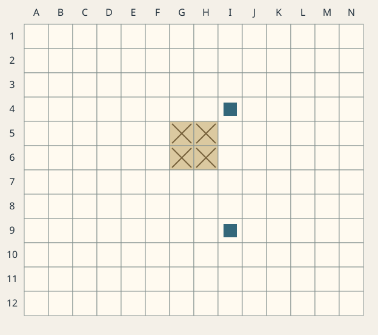

Одинаковые правила, разная история
Все карты совпадают с сеткой нативного пакета: 14 × 12, клетка — 5 футов. G5/H5/G6/H6 — трудная местность; I4/I9 — половинное укрытие. Остальные детали описания декоративны, пока ведущий не изменил поле штатно.
Расстановка и параметры
Начальные клетки героев: B3, B4, B5, B6, C3, C4, C5, C6; штатная подготовленная встреча назначает их присутствующим героям по именам. Противники: L3, L4, L5, L6, M3, M4. Используйте только нужное число фигур. Перед началом герои должны находиться в месте встречи.
Для 3 / 4 / 5 / 6 / 7 / 8 игроков: 2 / 3 / 3 / 4 / 5 / 6 противников, здоровье каждого 12 / 14 / 16 / 18 / 20 / 22. Защита 12; скорость 20 футов; одна ближняя атака +3, 1d4+1 дробящего урона, досягаемость 5 футов.
Враги — простая поддерживаемая модель. Мирные решения и ограничения сцены описаны отдельно; ведущий подтверждает их результат. После первого раунда напомните пути переговоров или отступления. Встречи не запускаются автоматически.
Спор у витрины
Только если после публичного спора герои сами продолжают физическое столкновение с раздражёнными взрослыми посетителями, вместо предложенного выхода и разговора. Ведущий отдельно спрашивает, нужен ли столу этот необязательный эпизод.
Цель и выходы
Выйти из тесной приёмной со своими разрешёнными бумагами. Поражение означает потерю удобного времени встречи, а не уничтожение улик; любую уже полученную копию можно восстановить у владельца.
Ольга предлагает по одному вопросу от каждой стороны. Можно показать, что группа уносит только собственные бумаги, отойти к стеклянной двери или назначить отдельную встречу. Все эти пути обходят боевые проверки и сохраняют расследование.
Поведение противников
Обычные покупатели от 30 до 60 лет, встревоженные публичным спором. Не убийцы и не тайная организация. Одна абстрактная ближняя атака +3, урон 1d4+1; художественное описание — нелетальная возня, без практических приёмов насилия.
Посетители мешают проходу, но прекращают конфликт, если группа уходит или предлагает разговор по очереди. Не преследуют снаружи и не пытаются уничтожить доказательства. Сдача и отход принимаются; магии и особых автоматических действий нет.
Размер группы
Для 3 игроков: 2 противника по 12 здоровья; для 4: 3 по 14; для 5: 3 по 16; для 6: 4 по 18; для 7: 5 по 20; для 8: 6 по 22. У всех защита 12, одна атака +3 с уроном 1d4+1. При 3 игроках один следит за выходом, двое разговаривают; при 4–5 добавьте перенос собственных бумаг; при 6–8 распределите наблюдение и переговоры, не увеличивая число целей. Отход всегда остаётся доступным.


Сетка 14×12, клетка — 5 футов. Трудная местность только в G5, H5, G6, H6 (четыре клетки): переносные стойки. Половинное укрытие в I4 и I9: низкие диваны. Южная дверь ведёт на улицу, северная — в пустую комнату. Полотна являются фоном; их повреждение не цель сцены. Выходы и прочие детали задаёт ведущий в описании; на нативном поле дополнительных препятствий нет.
Чужая рама в проходе
Только при попытке героев нести спорный предмет вопреки остановившим их взрослым работникам и после отказа от проверки владельческого согласия. Само появление работников бой не начинает.
Цель и выходы
Прекратить недоразумение и оставить предмет у согласованного владельца. Победа не даёт права забрать чужую картину; путь к уликам сохраняется через макеты и разрешённые копии независимо от результата.
Положить предмет на согласованное место, предъявить разрешение владельца или отказаться от перевозки. Борис предлагает вместо полотна авторский макет; любой участник может принять эту замену без броска. Можно уйти и вернуться после обычного согласования.
Поведение противников
Работники от 25 до 55 лет, отвечающие за доверенные рамы. Их условная атака представляет короткую нелетальную возню: +3 в ближнем бою, урон 1d4+1. Инструменты не превращаются в инструкции по реальному насилию.
Работники удерживают свою сторону помещения и зовут Бориса проверить согласие. После отступления группы прекращают конфликт, не выносят картины и не преследуют. Капитуляция означает остановку переноски и переход к разговору, а не плен или потерю расследования.
Размер группы
3 игрока: 2 противника по 12 здоровья; 4 игрока: 3 по 14; 5 игроков: 3 по 16; 6 игроков: 4 по 18; 7 игроков: 5 по 20; 8 игроков: 6 по 22. Защита 12, одна ближняя атака +3, урон 1d4+1. Для 3 назначьте хранителя согласия и двух переговорщиков; для 4–5 добавьте ответственного за заменитель; для 6–8 пары проверяют владельца, возврат и проход. Разговор прекращает эпизод для всех одновременно.

Сетка 14×12, клетка — 5 футов. Трудная местность только в G5, H5, G6, H6 (четыре клетки): пустые упаковочные короба. Половинное укрытие в I4 и I9: низкие столы. Западная и южная двери открыты. За выходами работников не разыгрывают преследователями; рамы у стен — фон. Выходы и прочие детали задаёт ведущий в описании; на нативном поле дополнительных препятствий нет.
Закрытая штора
Только если приглашение на частный показ отозвано, герои остаются вопреки просьбе уйти и сознательно выбирают столкновение с обслуживающими зал взрослыми сотрудниками. Альтернативный разговор с Семёном вне помещения предлагается прежде боя.
Цель и выходы
Добраться до выхода и сохранить возможность передать собственное предупреждение. Стычка не нужна для установления вины, возврата или финала; её результат не решает покупку Семёна и не создаёт признание Сухова.
Уйти вместе с Семёном, если он согласен, передать разрешённую записку или назначить сверку в Комнате дневного света. Даже полный отказ Сухова от участия оставляет эти варианты. Подписание честного условия допуска также решает спор без боя, если обе стороны его принимают.
Поведение противников
Временные сотрудники от 28 до 50 лет, которым велели закончить встречу. Они знают только условия допуска, не тайну схемы. Одна абстрактная ближняя атака +3, урон 1d4+1, с нелетальным намерением и без огнестрельного оружия.
Сотрудники показывают выход и прекращают действия сразу после согласия покинуть зал. Не удерживают получателей приглашений, не отбирают собственные документы гостей и не выходят за ними на улицу. Любая сторона может предложить паузу и разговор.
Размер группы
Для 3/4/5/6/7/8 игроков соответственно 2/3/3/4/5/6 противников с 12/14/16/18/20/22 здоровья у каждого. Защита у всех 12; одна ближняя атака +3, урон 1d4+1. При 3 игроках разделите общение, документы и путь отхода; при 4–5 добавьте сопровождение согласного уйти гостя; при 6–8 используйте пары и один общий раунд решений. Новых целей и автоматического отсчёта времени нет.

Сетка 14×12, клетка — 5 футов. Трудная местность только в G5, H5, G6, H6 (четыре клетки): складные стулья. Половинное укрытие в I4 и I9: низкие тумбы. Южный широкий выход свободен, западная дверь ведёт в общую приёмную. Шторы служат фоном без особых боевых правил. Выходы и прочие детали задаёт ведущий в описании; на нативном поле дополнительных препятствий нет.